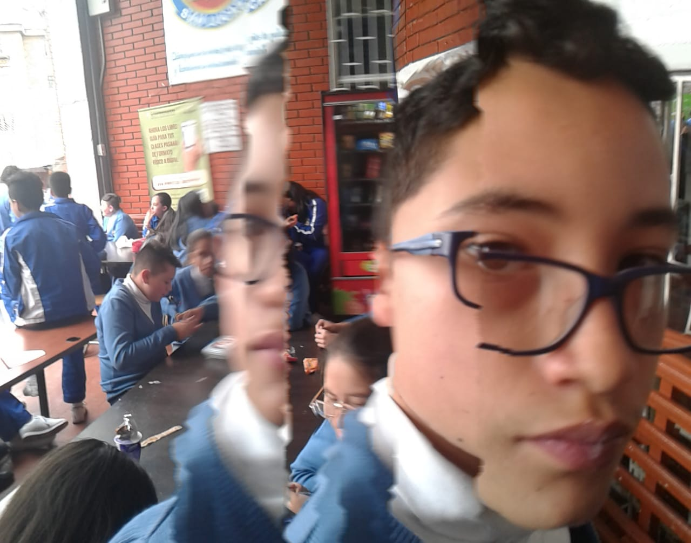
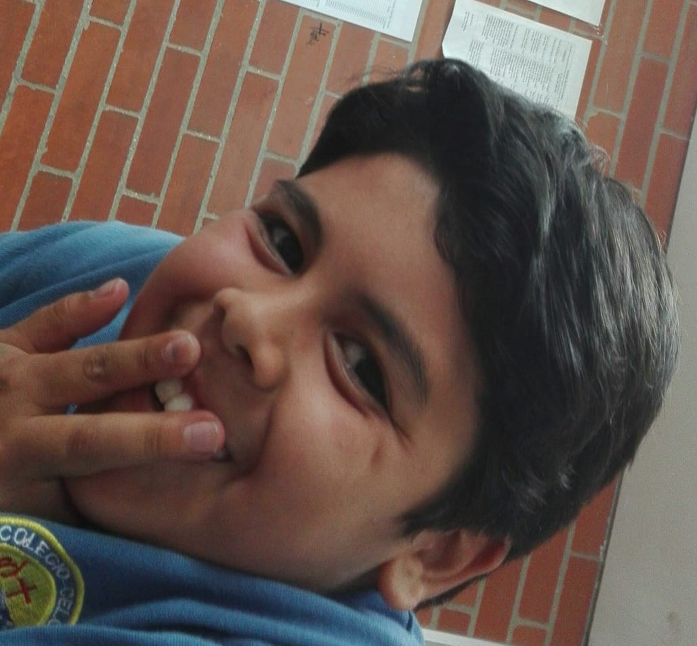

EpicClothes
Collaborators

Brayan nino: "Great power leads to great responsibility", It belongs to the documentation and product search team, it can usually be found wearing a simple attire making a little reference to the punk culture
Morrroy franco: "I see!" It is one of the ones that mostly takes care of the logistics of the project, you can see it using a simple style vated in sweatshirts
Nicolas prieto: "200 ok" Developer and collaborator with the design of the page, (hat, tailor, jean...)
Brayan sanabria: "good" Logistics coordinator as translation, has a typical style and simple birds
Brayan vanegas: "its EPIC!" Designer of this page and in charge of listing, he loves the orange color therefore most of his clothes make reference to this, he uses a style based on sweatshirts
Otalvaro romero: "Good good Good", Use the power of force to collapse both emotionally and logistically, we see it most of the time wearing sweatshirts dyed in dark tones
Juan andres guevara: "ah, ah Boom" You can see it using a jean and a shirt, help in logistics